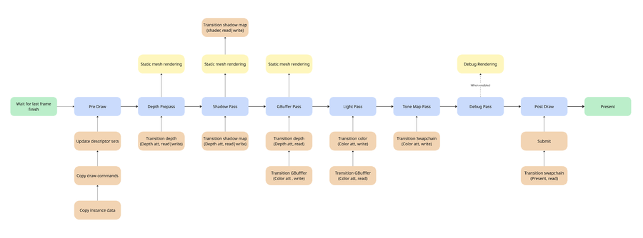
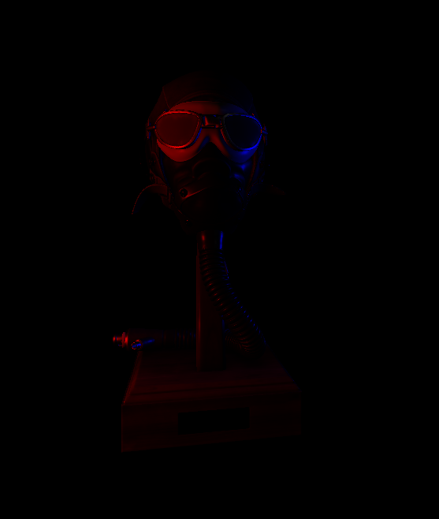
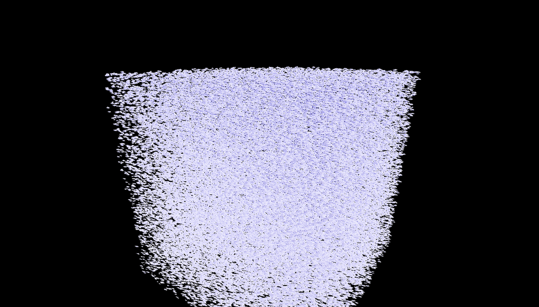

MauEng.
3D Game Engine
A custom 3D game engine built from scratch with C++20 and Vulkan. Features a fully bindless renderer with deferred shading, an event-driven core, and an ECS built on EnTT. My primary project for exploring engine architecture, GPU-driven rendering, and real-time systems - actively developed with CI via GitHub Actions.
Demo
A small demo scene showcasing the engine's rendering and core systems.
Renderer
The Vulkan renderer uses a fully bindless, indirect drawing architecture. All geometry lives in global vertex
and index buffers, draw commands are batched with vkCmdDrawIndexedIndirect, and textures are stored in a
descriptor array. A deferred shading pipeline with a depth prepass handles lighting efficiently while minimizing overdraw.

Bindless Rendering
Global buffers with batched indirect draw commands. Textures in an unbounded descriptor array - no per-draw binding overhead.
100K Instances
Tested with 100,000 instanced meshes at 60 FPS on an RTX 3060 with GPU headroom to spare.
Deferred Shading
G-buffer pipeline with depth prepass. Point and directional lighting resolved in screen space.
Asset Pipeline
Assimp integration for all major 3D formats. Auto-instanced submeshes with file-based material loading.
Tone Mapping
Multiple tone mapping modes with adjustable exposure. Runtime toggling via keybinds.
Debug Rendering
One-liner API for drawing lines, spheres, and light visualizations at runtime.


Engine Core
Beyond the renderer, MauEng includes a set of core systems designed for flexibility and ease of use. The event system supports both immediate and queued broadcasts with safe delayed unsubscription. An action-based input system with mapping contexts handles keyboard and mouse input with runtime rebinding.
Event System
Delegates with immediate and queued broadcasts. Lambda and member function binding with safe delayed unsubscription.
Input System
Action-based input with mapping contexts, keyboard and mouse support, runtime rebinding.
Component System
EnTT-backed ECS with an engine wrapper providing the interface for entities, components, and queries.
Logging
Multi-level, multi-category logger with color-coded console output and rotating file logs.
Profiling
Macro-based scoped profiling with Chrome tracing output and optional Optick integration.
Timer Manager
One-shot and looping timers, next-tick scheduling, pause/resume/reset with handle-based management.
Tech Stack
- C++20
- Vulkan
- CMake
- SDL
- GLM
- Assimp
- EnTT
- fmt
- Optick
- GitHub Actions CI
Roadmap
Planned features for upcoming development.
- Image-based lighting (skybox)
- Auto exposure
- GPU frustum culling
- Optimized scene AABB calculation for shadow maps
- Soft shadows
- ImGui integration
- Animations
- Post-processing effects